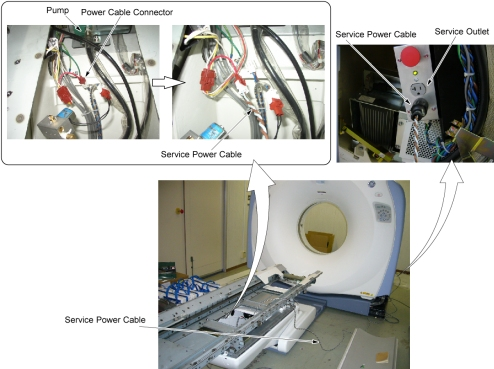

Operating Documentation
Direction 5181166-800, Rev# 7
BrightSpeed Select Service Methods Adv
Operating Documentation |
| Required Persons | Preliminary Reqs | Procedure | Finalization |
|---|---|---|---|
| 1 |
| Last Revised: | 16 March 2007 |
Remove power from Table by turning off “120VAC”, “Axial Drive” and “HVDC” switches on the service switch panel.
Remove the following covers and component:
Top Covers (Left and Right side) (Refer to Table Covers Removal)
Cradle (Refer to Cradle)
Rail Covers (Left and Right) - (Six(6) Screws)
Cradle Tray (Six(6) Screws)
| Table elevation continues to activate while the power is applied to the Table pump. Upon completion of the Table elevation, disconnect the service power cable from the service outlet on the Gantry immediately. | |
Disconnect the power cable connector of the Table pump.
Connect the service power cable to the power cable connector of the Table pump.
Plug the service power cable into the service outlet of the Gantry,
Illustration 1: Service Cable Connection

Unplug the service power cable from the service outlet of the Gantry, after completion of the Table elevation.
Disconnect the service power cable from the power cable connector of the Table pump
Re-connect the power cable connector of the Table pump.
No finalization required.